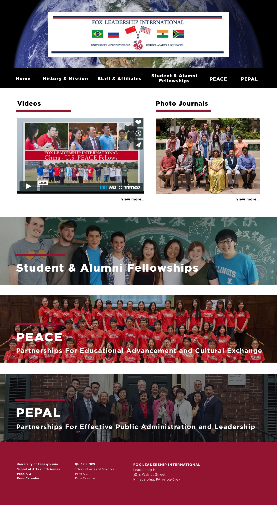

I helped design and implement the Fox Leadership International website for the arts and sciences department at UPENN. It was one of the many website projects I got to take part in while on co-op for the University of Pennsylvania The site will be set to launch by the end of the year.